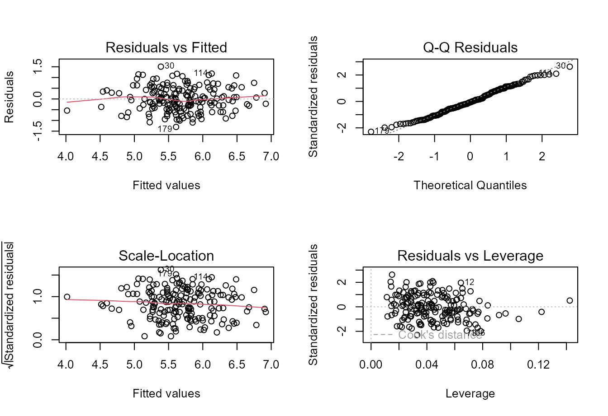
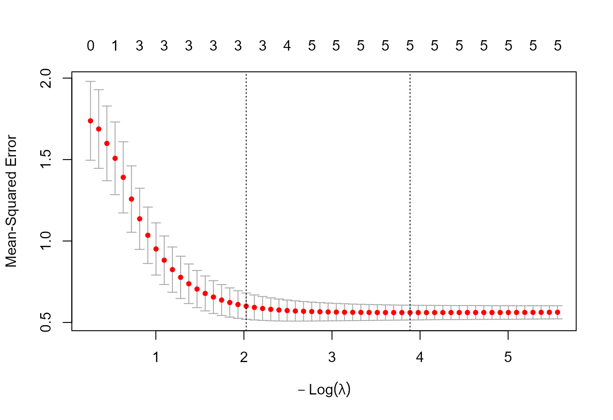

Foundations to advanced multiple regression in agricultural sciences
Source:vignettes/v01-foundations-to-advanced-tutorial.Rmd
v01-foundations-to-advanced-tutorial.Rmd1. Begin with the scientific question
Multiple regression is most useful when the model is connected to a scientific question. Consider a synthetic soil-fertility dataset in which crop yield is related to soil reaction, organic matter, texture, available nutrients, soil water and seasonal rainfall.
soil <- mr_example_data("soil_fertility")
head(soil)
#> yield_t_ha soil_pH organic_matter_pct clay_pct available_P_mg_dm3
#> 1 4.939198 5.587541 0.9136292 30.31950 21.236872
#> 2 5.798104 5.892831 3.8554225 28.32172 23.897597
#> 3 5.602376 5.293853 1.5610240 19.34390 36.422502
#> 4 5.065433 5.881771 0.9004022 16.66973 9.359331
#> 5 5.871927 5.611566 1.2689464 52.24648 6.083137
#> 6 5.514284 6.987995 3.0836037 23.83380 10.061138
#> exchangeable_K_mg_dm3 CEC_cmolc_dm3 soil_moisture_pct season_rain_mm
#> 1 111.23988 22.04730 17.97199 616.6099
#> 2 103.21044 26.49989 21.38650 646.4131
#> 3 56.64054 18.92448 24.18364 521.3450
#> 4 78.63756 22.83040 27.87862 691.7602
#> 5 135.57253 34.23084 26.49413 611.6078
#> 6 127.93277 21.75013 22.01465 707.3954If the objective is to estimate conditional associations and quantify uncertainty, declare an explanatory goal.
fit <- mr_fit(
yield_t_ha ~ soil_pH + organic_matter_pct + clay_pct +
available_P_mg_dm3 + exchangeable_K_mg_dm3 +
soil_moisture_pct + season_rain_mm,
data = soil,
goal = "explanation"
)
summary(fit)
#>
#> Call:
#> (function (formula, data, subset, weights, na.action, method = "qr",
#> model = TRUE, x = FALSE, y = FALSE, qr = TRUE, singular.ok = TRUE,
#> contrasts = NULL, offset, ...)
#> {
#> ret.x <- x
#> ret.y <- y
#> cl <- match.call()
#> mf <- match.call(expand.dots = FALSE)
#> m <- match(c("formula", "data", "subset", "weights", "na.action",
#> "offset"), names(mf), 0L)
#> mf <- mf[c(1L, m)]
#> mf$drop.unused.levels <- TRUE
#> mf[[1L]] <- quote(stats::model.frame)
#> mf <- eval(mf, parent.frame())
#> if (method == "model.frame")
#> return(mf)
#> else if (method != "qr")
#> warning(gettextf("method = '%s' is not supported. Using 'qr'",
#> method), domain = NA)
#> mt <- attr(mf, "terms")
#> y <- model.response(mf, "numeric")
#> w <- as.vector(model.weights(mf))
#> if (!is.null(w) && !is.numeric(w))
#> stop("'weights' must be a numeric vector")
#> offset <- model.offset(mf)
#> mlm <- is.matrix(y)
#> ny <- if (mlm)
#> nrow(y)
#> else length(y)
#> if (!is.null(offset)) {
#> if (!mlm)
#> offset <- as.vector(offset)
#> if (NROW(offset) != ny)
#> stop(gettextf("number of offsets is %d, should equal %d (number of observations)",
#> NROW(offset), ny), domain = NA)
#> }
#> if (is.empty.model(mt)) {
#> x <- NULL
#> z <- list(coefficients = if (mlm) matrix(NA_real_, 0,
#> ncol(y)) else numeric(), residuals = y, fitted.values = 0 *
#> y, weights = w, rank = 0L, df.residual = if (!is.null(w)) sum(w !=
#> 0) else ny)
#> if (!is.null(offset)) {
#> z$fitted.values <- offset
#> z$residuals <- y - offset
#> }
#> }
#> else {
#> x <- model.matrix(mt, mf, contrasts)
#> z <- if (is.null(w))
#> lm.fit(x, y, offset = offset, singular.ok = singular.ok,
#> ...)
#> else lm.wfit(x, y, w, offset = offset, singular.ok = singular.ok,
#> ...)
#> }
#> class(z) <- c(if (mlm) "mlm", "lm")
#> z$na.action <- attr(mf, "na.action")
#> z$offset <- offset
#> z$contrasts <- attr(x, "contrasts")
#> z$xlevels <- .getXlevels(mt, mf)
#> z$call <- cl
#> z$terms <- mt
#> if (model)
#> z$model <- mf
#> if (ret.x)
#> z$x <- x
#> if (ret.y)
#> z$y <- y
#> if (!qr)
#> z$qr <- NULL
#> z
#> })(formula = yield_t_ha ~ soil_pH + organic_matter_pct + clay_pct +
#> available_P_mg_dm3 + exchangeable_K_mg_dm3 + soil_moisture_pct +
#> season_rain_mm, data = structure(list(yield_t_ha = c(4.93919819238758,
#> 5.79810416782141, 5.60237604795751, 5.0654331823456, 5.87192712680886,
#> 5.51428354559753, 5.85172804581305, 5.36491951774581, 5.85215298315365,
#> 5.59123518461149, 6.60564695845147, 7.58364757106499, 4.66251042638966,
#> 6.20625309768553, 5.31695400177487, 5.91382753620317, 4.0460346762612,
#> 6.22251678296241, 4.65831284642357, 5.25091332361175, 5.67041425025647,
#> 5.54409623229746, 6.11487509373951, 4.86775181671004, 5.09658779667857,
#> 5.22069925768772, 5.34650658413604, 5.2379029502958, 6.23657441185012,
#> 6.89379041030544, 6.43496737338328, 5.46378696055802, 6.40845480331035,
#> 6.33360299291684, 6.24870227436443, 6.42899287508104, 5.47533628103281,
#> 4.63934575935828, 5.83272646463426, 6.60988596528346, 5.93025341977283,
#> 5.25898282777779, 6.53657155583306, 6.92432156755912, 6.12140064198045,
#> 4.91730623406359, 5.42767196021806, 6.92807107555042, 5.65353396016509,
#> 6.02119787404972, 5.91318547020795, 6.04479800214912, 6.11397529728095,
#> 5.90084688095526, 5.03034562856859, 6.54325283622395, 6.79503844197566,
#> 6.08972156060317, 6.35554573086227, 5.72044876769225, 5.94440789652521,
#> 4.86011700665214, 5.43139818252739, 7.20158936350688, 4.81541703574007,
#> 6.53775734622284, 4.98808681958027, 6.64006749119712, 5.98161677829992,
#> 6.11796045153984, 6.33613238720294, 5.53947801652394, 4.75477962590478,
#> 4.82506520824906, 3.47614329546331, 6.32605629687878, 4.50256149355777,
#> 6.87878506846218, 5.03019113320139, 5.45342847234514, 5.63867894352388,
#> 6.76310638303811, 6.40268549180546, 6.09352250111898, 5.89895533342223,
#> 5.56461169068026, 5.81676590005918, 5.68657371050625, 5.84139685556121,
#> 5.53768604589218, 7.09099428275243, 5.23362328494252, 5.29285895980677,
#> 6.21461822140873, 4.91146360100461, 4.98142274973711, 5.46155641017629,
#> 6.60979174064844, 6.00005776755527, 6.627055074643, 5.75850434054868,
#> 5.06554740792816, 5.1519234808504, 6.43116917872808, 6.00166412059201,
#> 4.13809067200488, 4.88403688117163, 4.28114606556997, 5.53672759428047,
#> 4.9962346472594, 4.99403137214216, 5.6499554672187, 5.6387354413486,
#> 7.31504011981914, 4.01912445374415, 4.96159165619827, 6.83095770959404,
#> 5.04293841681893, 5.04459813868133, 5.98318825746864, 5.23104155392868,
#> 4.90928004316592, 6.31024374965264, 5.37460534069042, 5.52318006054997,
#> 7.17762685750764, 4.78287917085684, 4.70541113776446, 4.88142058258214,
#> 7.50081749510967, 5.39558228123239, 5.09358057690497, 6.36057181629883,
#> 7.11439479233533, 5.17515785569222, 5.92923755542582, 5.92412339049615,
#> 6.69693545170494, 6.04024409318081, 6.84753580136584, 6.05663490541285,
#> 4.14597279361922, 5.1529385090168, 5.49488118152857, 5.28823159949926,
#> 5.83334591083764, 5.67629946126914, 5.64677598642841, 6.57719601681508,
#> 5.93433037451896, 4.89848623685481, 4.67949792206709, 6.01521111615748,
#> 6.20585852737482, 6.04968133315862, 6.27648987341942, 5.79944949424952,
#> 5.11499102466922, 5.67541022797711, 5.69282726411533, 5.61832118143971,
#> 6.07759618438638, 5.58468028608969, 5.18522667712028, 5.68672831777677,
#> 5.93475191999904, 5.24585466577066, 5.57753862920591, 4.51088396084262,
#> 6.58118387176372, 4.38540317815933, 5.27345677665083, 5.26249728850254,
#> 6.91583983631612, 4.99973791487605, 5.53864544788036, 5.14990220967845,
#> 5.4785428900642, 4.30556589075527, 5.54166309339377), soil_pH = c(5.58754139674714,
#> 5.89283089085002, 5.29385348323051, 5.88177133129497, 5.61156637041777,
#> 6.98799455663812, 5.08408558957604, 5.87516254204796, 5.35971045819027,
#> 5.66617614244657, 5.7066789698425, 5.48458799697481, 6.80176204452107,
#> 5.80310734114672, 6.06578867734205, 5.64862676092069, 6.1436404959727,
#> 6.41782165241139, 4.85329518007156, 5.99125172674061, 5.28912160144852,
#> 4.40684769001354, 5.46509281771255, 6.33171074618882, 5.82200539371804,
#> 5.94332569606525, 6.12008209841134, 6.83753809453552, 6.59198343992148,
#> 6.12210599106966, 5.19050287046332, 5.80787134864367, 7.11392751161279,
#> 6.12666210415098, 4.9724392970147, 6.51016913860351, 6.79444250835672,
#> 6.51729433992385, 6.89448271277746, 6.95964533024882, 4.9041243191815,
#> 5.99726295506686, 6.03044837478616, 5.30716803880665, 6.14972701874975,
#> 5.25490949922885, 6.05742328032726, 5.29723975504333, 6.96754009056337,
#> 7.01962549543345, 6.52616133346387, 6.91429411305738, 5.05326081770851,
#> 5.58238712598123, 5.29266038625268, 5.67950803819156, 5.49239356473147,
#> 5.7562899226102, 5.59493307318338, 5.45390652377358, 6.58506837965184,
#> 4.52111182635842, 4.66916049114248, 4.58402664383949, 5.84563883182796,
#> 5.39208756664473, 5.92437413359002, 5.41103525419488, 6.0753613653646,
#> 5.20051602810125, 5.11991939258269, 6.20665489272465, 5.1196877868809,
#> 5.77247681299413, 6.17296153977061, 6.41058005534565, 5.11215286474114,
#> 5.8632070368285, 6.06465709251671, 5.1882966777174, 6.18101684645552,
#> 5.85862216868348, 6.03462024212535, 6.21338220207483, 5.29993326431921,
#> 5.77410620861066, 6.52133134629708, 6.34700755145117, 6.08730329730907,
#> 5.05032976434426, 5.54083220996535, 6.42815541541124, 5.30914769736598,
#> 5.53015661356331, 5.92075394883688, 6.56880152223406, 5.77830810557922,
#> 7.16331126914627, 4.9419007697238, 6.23008986509054, 5.63553778000574,
#> 6.02141461361762, 7.14125246467207, 6.22653188812976, 6.70130652195401,
#> 7.15049341168053, 5.8356500531641, 5.78839698103249, 6.22531925323219,
#> 6.63221145591993, 5.77726511711791, 6.75065533730078, 6.13843190646028,
#> 7.032947870781, 4.57020183844293, 6.38977499203246, 6.99178279555554,
#> 5.95491890383604, 6.83654436399177, 5.46758682284492, 6.68036132672306,
#> 6.52635050659903, 6.02841306376956, 6.11085639366898, 6.0565591400257,
#> 6.15825207321755, 5.6067693970256, 5.49527779390457, 5.93578422846067,
#> 6.00152633350832, 6.32705616512177, 5.51211569249905, 5.52723261131973,
#> 5.98277365351698, 6.19088320530433, 6.11118733596551, 5.98450148623344,
#> 4.98456939842514, 5.70507287871556, 6.28700919296869, 6.63992791007631,
#> 6.17273658212885, 4.79632831072385, 6.08226928283423, 6.25807564185587,
#> 5.5350694538196, 5.79894512104575, 5.09890310265247, 5.53372998320714,
#> 6.24084707214384, 5.87870243176592, 4.68936419647109, 5.69610211913875,
#> 6.52900615456973, 6.325220410172, 6.14313352215986, 5.45519077138977,
#> 5.10373424105685, 5.9916064404174, 6.47456831084137, 7.14981194137903,
#> 5.60098916166409, 6.58208256784431, 5.25967867451075, 5.89716033410286,
#> 5.5180484107875, 5.57263382302716, 6.32142508528205, 6.53144536211245,
#> 5.84424637098668, 6.10578732842059, 5.47865296892935, 6.82585720909037,
#> 6.01955486694042, 5.58676185325439, 5.26659957682499, 5.26829068132659,
#> 6.33470018744696, 6.44419005866209, 5.31150951916315), organic_matter_pct = c(0.913629187607949,
#> 3.8554225447644, 1.56102404058908, 0.900402170177865, 1.26894640801665,
#> 3.08360371357642, 3.68038163368922, 1.45054305932843, 2.26889431638624,
#> 2.23121860094391, 2.2696984527593, 2.62992594111528, 3.39261740711846,
#> 1.75455029879502, 1.81184412798348, 3.79283800329565, 2.39705004430433,
#> 2.10894146530425, 2.13882450906444, 1.66256452216488, 2.05875327759231,
#> 3.71677261771802, 2.56701881510542, 3.10536079311936, 3.51999619684384,
#> 0.7, 2.71731145302576, 3.37851553758136, 1.9394219054959, 1.98939542671338,
#> 2.98505986998733, 0.7, 2.06833738231311, 2.13197940976943, 2.54546162859893,
#> 1.48642125444157, 2.15840762234312, 1.38098898419636, 1.70776503587568,
#> 1.47006980297518, 2.57455007045554, 2.93307316371687, 2.55352329919723,
#> 2.94757502731169, 2.12049642472131, 3.08811790244148, 2.35762721354076,
#> 3.74940959514145, 1.39007980533045, 1.89455589992239, 1.87962796585963,
#> 2.20278630848303, 1.56548846686088, 2.71575886317986, 2.94861757285901,
#> 2.5802770943019, 2.05874642039792, 2.40189793762027, 1.16357511806276,
#> 2.31289793701933, 1.44519444778919, 1.85789563175061, 3.33792448954061,
#> 2.17401933806807, 2.40154641097023, 2.08326851729595, 2.29443268437967,
#> 3.32510738713734, 1.05864106300913, 3.46110827627191, 3.36690884987479,
#> 1.36311610427181, 1.60656664498762, 1.35086070226786, 0.7, 2.34468254649133,
#> 3.53530117409366, 2.2607932471031, 2.28737263142807, 2.55937479980652,
#> 2.09113223489822, 3.5353416731608, 3.20090124180227, 1.78741561272892,
#> 2.80581172875918, 1.86831750787527, 3.01973374446935, 2.43060091974173,
#> 1.56571333357197, 3.20739615722118, 2.43942623694198, 4.56356548017978,
#> 2.27052469443923, 1.15785122300191, 2.58541939806733, 2.28406915447751,
#> 2.65806916329475, 2.00329222048779, 0.859521346380519, 1.78408210563926,
#> 1.96554728385981, 1.83925410209397, 1.8765947900323, 2.50561838524617,
#> 2.64602334438337, 2.07281129073652, 2.59888445924585, 1.25171590328131,
#> 1.16679252246367, 2.74631346171432, 1.61454592894966, 2.98754635718443,
#> 2.58252664184704, 3.16600270144428, 1.80209438045944, 1.73031958573067,
#> 2.97735272145703, 0.901426419571855, 2.16791628952602, 2.74950254254534,
#> 2.43696360631539, 2.42839030374173, 3.4746409836409, 3.15836225678782,
#> 2.56712026026803, 2.68508647969413, 1.8282505997485, 1.14029428398534,
#> 2.03736576195665, 2.56664850369573, 1.8508917404901, 1.06337190395206,
#> 2.99686626481188, 2.38265415716104, 3.03202437313674, 2.61467603686008,
#> 3.34975656590037, 2.58259957154813, 1.66664225776031, 2.08317859110654,
#> 2.51833610699359, 3.01786766237329, 2.1075108924087, 2.93512725621094,
#> 0.7, 1.7661173022251, 1.35569264849476, 1.92312436393741, 1.06087656776906,
#> 2.45114297468511, 2.06070471634276, 3.22776269046898, 2.89972786095636,
#> 1.61217062045115, 2.05801977538909, 1.8364581467745, 3.86023927414187,
#> 2.83524725770987, 3.08834669934661, 3.68367860942191, 2.84095134784591,
#> 2.63964231082522, 1.4988268049869, 2.31287594354763, 2.10885936884813,
#> 2.42741048865203, 2.28461300385151, 2.61169423609868, 1.3264929589097,
#> 1.59056214080071, 0.7, 2.70412635879994, 1.4651526682116, 2.47769036774436,
#> 0.7, 3.15245980364802, 3.02792118360203, 2.10147227155374, 1.77616968178183,
#> 2.11447187671706), clay_pct = c(30.3194981963226, 28.3217154378714,
#> 19.3439010952975, 16.6697292480851, 52.2464837351751, 23.8338044476619,
#> 31.405182221763, 20.7088483444999, 31.8840220464303, 39.1804046255383,
#> 36.4159676282776, 33.1399887303862, 42.2916413164127, 19.2135712688088,
#> 28.7651917617465, 23.9614857791092, 41.9645794305725, 29.3156989904944,
#> 27.1764818839736, 38.8172549517021, 22.2900564062329, 29.6280259490986,
#> 30.1891110891312, 54.5069037386592, 41.7918827401441, 41.9495032911943,
#> 24.6871374987774, 14.0059451696886, 38.2887234130884, 28.415314305509,
#> 32.7090467163795, 18.7050201323831, 21.6924300730736, 51.7270932525555,
#> 23.3962195034566, 36.454207927817, 23.8091841835418, 41.1593567453616,
#> 35.2323725737047, 38.2973863254118, 36.5289551209542, 30.9914052718895,
#> 30.763441480816, 35.2528519856404, 48.3616312106156, 26.2863348535525,
#> 34.2720450538307, 30.2075886645407, 35.7388784938979, 35.8714258119471,
#> 31.5796758146747, 40.1929779823589, 38.1265296955375, 39.4598280244127,
#> 30.663409276571, 26.4922876963005, 37.119129547786, 33.3329520831502,
#> 39.4093778729752, 27.5776027941942, 45.2301056339555, 15.8880798911522,
#> 14.3558938065225, 33.4309026708275, 49.4466662795407, 34.4626700328949,
#> 45.3431398752884, 37.7061071209074, 17.150684426662, 26.3290893176798,
#> 31.9955832930632, 26.5202474378299, 41.9223176260085, 29.7860614905727,
#> 22.7093030049008, 35.0830508030156, 22.594240644161, 42.4879646010599,
#> 30.7013514142882, 20.0234574468727, 38.8925785349327, 33.4568977388873,
#> 39.8963159506941, 20.2809119027894, 33.228131047706, 12.4291677358552,
#> 41.9626540890025, 30.4458740836422, 25.7429735829566, 43.0157566645133,
#> 35.3582262820801, 42.8109734577309, 35.6002187121335, 45.1906059262494,
#> 30.6576828106105, 49.83290299302, 17.0594495658844, 42.3353959016441,
#> 25.7210645560541, 20.6276866823232, 35.5825247861219, 40.3143937899141,
#> 40.4707828041452, 40.6024403211789, 16.3660390483932, 47.6871631892809,
#> 31.9352688148889, 18.347786382514, 20.1487571031772, 38.4396314433597,
#> 15.9664194706544, 32.7159422902365, 31.2853196522391, 26.9108757325068,
#> 17.3001945064903, 29.3618028829969, 24.2460567256781, 44.8037281807571,
#> 31.2867719683087, 21.7608567609119, 43.2800362212524, 27.6825815497775,
#> 34.0249990204689, 28.6819098705952, 25.4231413087912, 27.7118468034108,
#> 23.3218642980856, 27.6377508062357, 35.0392186467469, 21.2183250529276,
#> 29.27922579479, 30.0683740315417, 51.0612537215772, 30.0325324352733,
#> 36.8866802108627, 37.4531091634029, 25.5263323150885, 40.0768462615477,
#> 24.5338567599392, 36.8074736126501, 43.6832403458546, 27.8719424276526,
#> 33.6344422804592, 28.2193527389832, 18.6228651296691, 20.073284421629,
#> 36.9319407262516, 35.194813078132, 37.8925861720918, 32.7882785599001,
#> 46.0177284491715, 8.47269139979804, 45.6641051232223, 36.4655038368456,
#> 39.2894689807544, 29.2390114611366, 34.6860363199297, 23.0373317544311,
#> 22.7240938313263, 21.4353812939143, 26.2272339954276, 36.5097314177767,
#> 34.256017140297, 41.6492067105654, 38.9511575325844, 39.8718662959284,
#> 47.5229942206432, 35.1647776548273, 36.5946186904664, 27.1953824037831,
#> 36.5848572124954, 29.1399977415375, 36.0021487385903, 29.8878815723898,
#> 30.1832545207174, 48.3758578275564, 23.2154521692337, 35.5489035207723,
#> 37.6589881083644, 23.0416633770041), available_P_mg_dm3 = c(21.2368719380611,
#> 23.8975972796851, 36.4225019756958, 9.35933086248733, 6.0831369498109,
#> 10.0611384645662, 17.9470581390791, 27.0656633142582, 13.6641679142569,
#> 15.5022487217194, 13.6365548041453, 48.5018925424122, 15.3531493063813,
#> 15.6233119647741, 36.9700190272813, 9.57396672047378, 4.52258756416845,
#> 29.6275756442558, 23.2436434052258, 23.6425080731327, 9.47031240677734,
#> 20.8014715306316, 23.1477253667475, 16.3085232219156, 21.4952587135998,
#> 25.2191947221758, 29.1720714923889, 20.0306389062818, 12.5192934620186,
#> 13.9858585884936, 12.7203507154264, 8.15515633069036, 29.5654341052835,
#> 13.8763234639364, 17.5377473465042, 28.7447795026126, 20.4828133432296,
#> 26.4051903268314, 16.7001167912738, 13.7010179145402, 40.056598114514,
#> 22.1667324325093, 16.0833464335165, 16.9496084116319, 6.6600070629669,
#> 22.0158373691908, 29.7713181732145, 43.8126410066655, 36.9798273153846,
#> 23.8220651658596, 16.0483377998696, 29.1350053642956, 25.7668027832304,
#> 12.6007343492918, 25.010012200096, 18.2266450868186, 17.2529302167278,
#> 13.1921107017203, 37.0378199976576, 15.2183677089408, 24.8161991183763,
#> 10.833891863597, 7.99546563069337, 23.3881057755478, 11.2871326368522,
#> 10.8341554877211, 20.7427460882961, 13.9372819907334, 20.0395039864198,
#> 21.1565985360225, 37.0242898398811, 22.4459249559646, 14.0756258856649,
#> 24.1862200330214, 17.0215466038226, 24.4026681695124, 21.4475415620736,
#> 15.3014557917678, 11.2076381692156, 12.0260993621934, 24.1680487875052,
#> 18.1056068995624, 39.3039670237659, 12.0565746387478, 20.1419839714918,
#> 15.19704782109, 21.6500787006339, 12.0016527600922, 16.0790326592396,
#> 22.6095388628153, 24.0309804267051, 11.4822528678505, 11.1561144627461,
#> 20.267736240866, 22.5487259747409, 23.440333529742, 12.1272162672863,
#> 29.9759490336445, 37.921053752293, 35.7223728975514, 8.88659700288036,
#> 7.83102826903573, 13.4702203711559, 28.9832079255758, 9.4613337740738,
#> 18.7968590853948, 9.47481458478461, 26.8875638911108, 23.3528499439454,
#> 21.8699015355583, 15.8200343150061, 10.678687865458, 16.9128981935056,
#> 26.6271578353811, 12.4199642350786, 10.2103425064569, 21.080273217138,
#> 15.2934045501853, 24.5335282124899, 16.2358756179924, 11.2154747547754,
#> 24.2336944455562, 27.786588162268, 21.4330673548488, 18.2561846852634,
#> 64.9759276158283, 31.5948201444057, 19.235303432156, 32.548053245629,
#> 34.8887982543506, 10.1797455797639, 34.7189823516821, 19.0970292091619,
#> 33.585000426827, 10.1977542521145, 9.7129301250795, 13.2395196356688,
#> 50.1623427318152, 19.7950976799765, 49.9620861167951, 23.4406049501225,
#> 10.4540519412028, 14.2566419940341, 10.1098725224273, 29.4495014363618,
#> 18.9139182667729, 12.062167557792, 17.1305724075994, 9.74221784642119,
#> 12.9599590317968, 11.5848682775884, 17.9357318223615, 22.2384442677897,
#> 14.3558722203235, 22.0722414688231, 17.3605631240221, 21.6128031044351,
#> 12.7952311020815, 18.5435002068308, 18.0530929965197, 8.63230077445298,
#> 13.200348098405, 12.7677877116133, 8.07245514699022, 21.3697145466608,
#> 14.5068817362635, 16.7647684536403, 20.7940133874196, 24.6525103409787,
#> 28.325243244408, 14.3483544686037, 21.998413985169, 15.3871676471492,
#> 19.6718160989589, 7.34267881906518, 18.4716291354522, 9.82671810014249,
#> 22.0525219364671, 16.1241523536935, 19.956041720266), exchangeable_K_mg_dm3 = c(111.239884250803,
#> 103.210443773495, 56.6405354556687, 78.637560775408, 135.572533414467,
#> 127.932769303691, 111.973277968055, 127.872804431131, 99.5738285374673,
#> 130.936120707775, 133.582313865056, 121.077279789238, 134.072197040261,
#> 88.8654942515401, 38.0223385016236, 143.586420445684, 94.8585727417339,
#> 178.052035851816, 141.156503848246, 125.687448974846, 96.8037685241895,
#> 103.093325331025, 138.580674864681, 106.603149253391, 121.988448500725,
#> 123.872395075745, 127.431165572782, 126.060686319726, 109.1392186991,
#> 121.472065728774, 140.549562288566, 163.521430693578, 137.913459758653,
#> 193.773546501437, 70.2294460501524, 137.712018990485, 104.075847209244,
#> 75.0693671571395, 142.371578647059, 122.916034818041, 150.708694507196,
#> 85.0774479274822, 130.356909173893, 147.086026555342, 177.045082768984,
#> 73.8503995837089, 152.517619948447, 102.651190247231, 118.038928900625,
#> 123.472161908225, 129.348541114082, 105.396243961211, 147.068789639327,
#> 145.189428916087, 106.351503276833, 82.2736212399336, 141.824924114104,
#> 171.693304829492, 170.617459564484, 201.209183381544, 103.021604776209,
#> 103.341199109947, 82.0027956160088, 145.491705769079, 110.076634439067,
#> 125.914781929423, 132.127301711827, 83.5980043373516, 97.8484903640128,
#> 110.416422232026, 134.204439942037, 115.397515791165, 180.469540767392,
#> 134.937809419848, 50.8691121078807, 126.730371885303, 73.3539523609433,
#> 173.808393476621, 99.9580035847632, 148.458901556293, 121.788104994842,
#> 137.134304135725, 154.771670530986, 71.0417755837918, 103.959882833656,
#> 150.147830762598, 59.1293927730499, 170.84289914739, 98.3074593678019,
#> 122.91047692224, 108.295200010753, 151.192723456048, 133.51959186012,
#> 121.380834072767, 159.777116279781, 119.051584684528, 128.972103049956,
#> 109.445366943402, 119.016856310953, 124.075315547908, 127.036983978198,
#> 106.044980745775, 65.286757844447, 192.782228069298, 207.428628255475,
#> 59.3956227711157, 35, 85.9380399109181, 80.187782775536, 98.5118184639364,
#> 134.738880421563, 131.129143625948, 83.6629315225361, 126.709964751677,
#> 56.2737642688441, 126.920651163757, 97.6259959294962, 138.245571865415,
#> 107.338748249836, 63.4266573668236, 124.475785058526, 51.9967694669143,
#> 118.909019516931, 128.817920385285, 158.517538513749, 138.721463151946,
#> 79.6820191707383, 107.124812327201, 72.995540387123, 150.190734268611,
#> 94.0002926780013, 52.7166647303574, 166.54850905954, 178.706710057078,
#> 142.659200356803, 129.486091340412, 99.7727369952199, 91.79973413917,
#> 117.039852139901, 183.304157669886, 102.016733491677, 97.1259969386651,
#> 136.479641502645, 104.091358668748, 115.339413447611, 208.16225728583,
#> 102.614424676305, 197.097321314591, 188.018325417734, 140.363730983604,
#> 98.4177486984981, 71.8525302845887, 144.359394688664, 110.432401995783,
#> 165.122557804642, 104.144780241643, 127.213714805706, 183.474125880739,
#> 100.489052768915, 122.551732731544, 101.686166243517, 166.369908335951,
#> 130.730206262235, 61.8240050641295, 162.00622862066, 154.149875988861,
#> 133.959462574463, 122.177493446917, 116.958609482612, 155.548416927805,
#> 128.563989461258, 121.07018031689, 151.879660221331, 175.528506170153,
#> 96.1726208681245, 107.323533754506, 131.035535333708, 120.631693658585,
#> 177.058989053671, 98.0527099831574), CEC_cmolc_dm3 = c(22.0472960144948,
#> 26.4998851168949, 18.9244789498311, 22.8303991413961, 34.2308416971416,
#> 21.7501329708102, 30.2619470052414, 24.7227125533353, 28.5871206633868,
#> 30.2662870225952, 31.0543483858524, 37.5563357777424, 39.2384873041947,
#> 19.2682470427157, 28.8169252191434, 26.9206057418524, 33.567818133134,
#> 31.2986420553611, 31.1930909717899, 33.6150108075364, 20.8892115091581,
#> 34.6448961029144, 33.0943986008521, 37.5483111329965, 39.3145413841162,
#> 29.784594470511, 30.6486391637604, 19.4002470732561, 28.7941898178705,
#> 31.9190794722528, 29.6705473551319, 20.7698347046283, 19.4386771332574,
#> 41.4663199936499, 29.9382654259156, 32.8590196649165, 23.6466776950085,
#> 31.2094634001393, 29.5563098061183, 28.5277969331428, 32.7753416187012,
#> 29.3664948202201, 25.1364961552841, 32.796856204396, 37.5175841066157,
#> 26.8213620062647, 30.9988716799652, 33.6174365438218, 28.1935947915871,
#> 28.1998164132032, 23.2336504725663, 32.6715442175481, 29.5281359729403,
#> 32.4925624228447, 25.6679024713334, 26.7376436950722, 35.8382688456471,
#> 27.723785697899, 27.5011678856962, 27.9153593007485, 33.7630587562709,
#> 20.5893528226337, 23.9344674315178, 35.3101419042532, 37.0009974168942,
#> 32.3294934748166, 37.5081754164683, 34.335233299935, 15.4934352720221,
#> 33.2273462045567, 35.3924077317116, 21.231628383505, 32.3692671664962,
#> 27.4286531205514, 20.6532469190946, 26.8128193865644, 28.0213002941783,
#> 32.537598374242, 28.8008927587558, 25.3524615695358, 30.7860486115299,
#> 36.4376110617914, 37.5437783050346, 15.9784848593339, 32.9380228277359,
#> 14.6605796596004, 40.3332669872059, 33.1604777127786, 18.5134179367475,
#> 35.4541510475462, 37.5013959107531, 45.3004768171684, 33.1470734187265,
#> 34.4316961576897, 22.8432298743676, 37.2518012336519, 23.5872087788033,
#> 31.7575998986092, 16.0478627542065, 22.8629871246966, 30.7097655412718,
#> 33.4929149949766, 32.2561760698959, 36.865417556127, 21.1268780536323,
#> 34.7638561320804, 31.5186409109442, 17.2787229142786, 22.3057959328978,
#> 31.5793050454292, 19.8769135269216, 27.1432035025408, 29.8805172055434,
#> 29.1918018049039, 21.43388489557, 22.4983490153185, 27.9613441584708,
#> 35.6322334085898, 31.6110370173524, 20.8631278869988, 32.9851738390635,
#> 31.0325639693303, 32.8584677155455, 36.085135307609, 23.6184226467298,
#> 26.1453970422091, 25.6622787246417, 22.1930649791101, 27.2276561270111,
#> 23.6004783665605, 23.4351914872625, 22.2985620512775, 42.8163654932425,
#> 23.4173177473238, 35.7398724049551, 33.6177663617285, 27.3631684477925,
#> 30.6823486001049, 26.6366114981415, 38.0019005363982, 35.0019910765496,
#> 27.3117293707645, 28.1845780757373, 31.0826797935787, 17.5215145725643,
#> 23.5955846479299, 28.9693657350439, 30.9390710296005, 29.5684064243119,
#> 26.0730307758814, 36.6130336980869, 23.3410026647746, 41.3070851096405,
#> 38.0213208231169, 31.4182581395493, 24.0696379287577, 36.4513430957686,
#> 26.4846581790198, 21.7676001411886, 26.1468668169492, 28.4144139135866,
#> 32.5467959038841, 21.073000497089, 30.6982962594585, 34.2621329045732,
#> 36.2374578948096, 36.774202619136, 30.1347120117524, 30.6797032377072,
#> 20.5110588116115, 22.2933429553891, 31.1504577458968, 26.4282159750328,
#> 23.373516414788, 20.6109370312572, 35.6661168939218, 23.4532338173604,
#> 30.5143839096179, 30.697442284223, 23.045600347985), soil_moisture_pct = c(17.9719914059503,
#> 21.3865022343446, 24.1836400779134, 27.8786225989096, 26.4941298878703,
#> 22.0146533915222, 31.2595918590955, 28.9686051154755, 26.2093035321776,
#> 23.244212797932, 30.5643951367596, 27.6193473746704, 27.4797715234034,
#> 26.0448833439286, 30.2645752823345, 24.2778412035049, 23.7259214477115,
#> 25.8116423792679, 22.3035119467453, 23.5098637340368, 18.4902988474655,
#> 25.217919561727, 20.5028286215153, 24.4131693570251, 19.6743270261603,
#> 25.0985496294092, 21.5669223907671, 26.9002018073684, 24.7603534803394,
#> 26.8170718005201, 25.093377329627, 20.8024667895442, 30.5904772813378,
#> 27.8057726314965, 27.6781091283093, 21.0158163522133, 16.0548365024575,
#> 16.1034086585807, 27.061919072037, 17.1783276013944, 20.8522492753655,
#> 33.3679620139257, 27.5445437214539, 25.1818096272057, 17.3294890014774,
#> 14.0421688264384, 23.6113396350093, 25.3105261958943, 22.4427035240978,
#> 23.7341423396224, 24.0508831833734, 26.8342425020196, 23.1986579581577,
#> 18.6210550401173, 13.8445636445625, 23.0095087406535, 22.0135999241829,
#> 20.4536391831658, 19.7854488075311, 13.633394687786, 27.3569140033968,
#> 22.3212120772619, 24.4521818544987, 20.2388451654627, 20.032346632128,
#> 29.4024427586753, 24.9514407485187, 22.2922074970518, 21.5122171242979,
#> 23.1427373598377, 26.5107211234427, 29.8409216915359, 32.5991098520362,
#> 27.3666113024637, 16.0576410980343, 25.3507483210232, 25.7870607299455,
#> 26.4796298706293, 19.8993688450731, 13.2326918389705, 21.0041149128497,
#> 27.3508031218259, 24.8389360876913, 25.1276245694065, 20.7353224336014,
#> 27.8150589067715, 24.9321904985316, 21.4241407538456, 26.6762308530724,
#> 24.0644365482043, 23.3262880787982, 25.1195390843291, 29.0708097525502,
#> 25.3923080776097, 19.3273778620206, 18.5113509822832, 25.246193584697,
#> 29.4587937046265, 22.2197708853771, 27.8166054471824, 29.624559833207,
#> 17.3480821691077, 27.8025305321323, 20.7964633425023, 25.5588196165821,
#> 21.8192815956855, 26.9157175592109, 22.7483216422404, 30.2445895242829,
#> 22.5242458347393, 26.6452816532013, 22.542068803506, 26.4520617546858,
#> 24.1237964339329, 26.4476353693653, 24.1676993440713, 24.0220695994118,
#> 26.7693263367351, 28.1039623347871, 23.3736121733762, 26.3274561369008,
#> 29.1882221916261, 14.8777793206879, 18.7911534645108, 26.7582222564554,
#> 26.1371616397768, 30.4602974048314, 13.6029119076607, 26.6391596627673,
#> 28.740379242006, 20.9382443785641, 28.8574889868024, 29.5501412653626,
#> 20.8518052553973, 27.5916863447558, 23.842847966954, 20.8287185365948,
#> 24.2313822521093, 18.060158703894, 24.3750047126282, 25.283681885343,
#> 12, 19.8448188230091, 25.6596021668486, 33.6404135309474, 18.3711348076541,
#> 27.0670175111818, 26.579334866788, 19.9971832803648, 30.4648700206747,
#> 25.9052076562228, 20.9513520914637, 21.7690188716619, 25.2420738757236,
#> 26.9881659742061, 20.5878152101471, 22.3170492137099, 28.1030000493297,
#> 21.6582853499632, 22.156645463804, 24.7053969311425, 25.1436509096556,
#> 22.0423145213332, 25.999954942364, 15.3394666544915, 22.6693434025712,
#> 18.4582425452955, 22.2695041392553, 25.7106310939657, 26.102283535028,
#> 25.5532181094304, 21.5463570918653, 32.2890003501088, 28.5337487059227,
#> 16.1427273915748, 22.806068828559, 29.5899379369244, 19.9562206321569,
#> 22.8758165194178, 27.2918017786696), season_rain_mm = c(616.609907630088,
#> 646.413054790354, 521.344987044106, 691.760166652706, 611.607847030097,
#> 707.395444475578, 619.578020231307, 509.871933272955, 577.23612221229,
#> 492.168054467796, 681.32412305051, 581.757438993264, 550.675069185957,
#> 603.851168831729, 552.473082094157, 603.80129050229, 573.201782184967,
#> 576.228908443919, 548.678803419749, 544.928572310434, 710.785146623144,
#> 599.022362442314, 596.501276595808, 641.167962557744, 446.879476207605,
#> 590.530966593029, 427.424042316382, 620.515975418233, 673.335898876648,
#> 573.890189332093, 614.410887960534, 618.914367943831, 616.541880405438,
#> 742.054088177362, 523.403263005064, 647.194880890426, 710.798009264262,
#> 603.454211020362, 593.778430554431, 808.95982988943, 634.761756678929,
#> 655.367969613086, 832.086993099043, 756.837652705003, 677.155170799995,
#> 676.843138379391, 674.832350846674, 537.409754587033, 735.956190671183,
#> 758.399222407922, 691.935010675007, 683.354154154311, 650.530352809414,
#> 585.455413762063, 521.096484042597, 837.75506280498, 606.650579257141,
#> 594.350773541299, 644.737973625575, 598.950557387947, 679.654023495578,
#> 572.940925640579, 716.657513785581, 683.487015286246, 627.433069555964,
#> 683.097801217781, 544.372308120557, 676.250975166557, 544.814136153283,
#> 508.871263851966, 582.41634431402, 546.95913578071, 559.987958300951,
#> 584.12594546311, 424.570554747838, 626.319908339817, 549.449498026393,
#> 680.719582338082, 545.278012265183, 648.423227123359, 601.399647661109,
#> 522.239015799673, 639.004233429826, 727.246753853787, 563.498447024001,
#> 508.820253212458, 584.530703949248, 784.164910097195, 694.302100308213,
#> 516.246588205641, 850, 543.705914473971, 528.565649995789, 635.850509453997,
#> 587.836881484063, 635.160267884499, 539.173524406287, 708.910848733873,
#> 693.643092203787, 596.739198021789, 712.748514823246, 782.223933247509,
#> 715.268175018805, 605.411586921136, 677.015023296473, 681.396420146774,
#> 509.844364452972, 453.092184338489, 558.225227194666, 593.488485393061,
#> 654.517107117931, 708.337595392698, 661.766790024154, 656.577563365744,
#> 537.182374522577, 410.299428382, 753.485441996376, 404.319610546877,
#> 690.909406090531, 615.986285154256, 675.068417149458, 699.562315811079,
#> 616.943283680849, 676.757380187167, 655.344006212047, 545.397047267936,
#> 516.540234789369, 776.968244524642, 498.667451940223, 703.584157565679,
#> 719.060787906937, 665.183519484713, 767.572522394499, 672.254585859122,
#> 581.685849453489, 584.296209106031, 822.067026442061, 792.398169908015,
#> 690.480648846675, 588.224709534093, 596.185899665297, 451.63956342445,
#> 501.025961910063, 735.946440909386, 528.411454664321, 631.316054777344,
#> 679.193885041372, 700.397424180017, 670.862601825104, 672.804916522587,
#> 526.652079118453, 627.618242669913, 610.508414895556, 536.618748001251,
#> 555.08504850517, 620.66094924755, 594.018847730369, 512.626322300163,
#> 453.569629181047, 619.2303600308, 522.190273426465, 660.096234099816,
#> 701.668535318898, 719.853029954264, 483.030067285327, 769.945548391529,
#> 621.171444387449, 703.394972837583, 492.963074415292, 739.348961059902,
#> 583.214829364031, 608.497075971746, 562.682498597428, 688.58605412454,
#> 582.702123153595, 591.158620966261, 671.006094658809, 685.231189505079,
#> 554.242189109716, 675.371941037993)), class = "data.frame", row.names = c(NA,
#> -180L)))
#>
#> Residuals:
#> Min 1Q Median 3Q Max
#> -1.30415 -0.39240 -0.03566 0.43626 1.50624
#>
#> Coefficients:
#> Estimate Std. Error t value Pr(>|t|)
#> (Intercept) 1.5954504 0.5939909 2.686 0.00794 **
#> soil_pH -0.0393809 0.0734973 -0.536 0.59278
#> organic_matter_pct 0.1614145 0.0566036 2.852 0.00488 **
#> clay_pct -0.0026121 0.0049691 -0.526 0.59980
#> available_P_mg_dm3 0.0272547 0.0046219 5.897 1.91e-08 ***
#> exchangeable_K_mg_dm3 0.0071421 0.0012765 5.595 8.54e-08 ***
#> soil_moisture_pct 0.0248052 0.0102639 2.417 0.01671 *
#> season_rain_mm 0.0032626 0.0004952 6.588 5.22e-10 ***
#> ---
#> Signif. codes: 0 '***' 0.001 '**' 0.01 '*' 0.05 '.' 0.1 ' ' 1
#>
#> Residual standard error: 0.5777 on 172 degrees of freedom
#> Multiple R-squared: 0.4182, Adjusted R-squared: 0.3945
#> F-statistic: 17.66 on 7 and 172 DF, p-value: < 2.2e-16A slope is interpreted conditionally on the remaining terms. For example, the coefficient of available P describes the expected change in yield per unit of P when the other predictors in the model are held fixed. This is not automatically a causal effect. Causal interpretation requires design and assumptions that go beyond a regression coefficient.
2. Fit is not adequacy
R-squared describes variation explained in the observed
sample. It does not establish linearity, constant residual variance,
absence of influential points, or transportability to future
observations.
dg <- mr_diagnose(fit)
dg$fit
#> n p effective_rank residual_df R2
#> 180.0000000 7.0000000 8.0000000 172.0000000 0.4181638
#> adjusted_R2 sigma AIC BIC
#> 0.3944845 0.5777249 323.1179645 351.8545762
dg$rank
#> rank_deficient n_to_effective_predictor_ratio
#> 0.00000 25.71429The package also reports a Breusch-Pagan screen and a fitted-value-power specification screen.
dg$heteroscedasticity
#> statistic df p.value
#> 2.0886930 7.0000000 0.9547686
dg$specification
#> statistic df1 df2 p.value
#> 1.3209121 2.0000000 170.0000000 0.2696168These are screening tools. A small p-value does not dictate a unique repair. The next step should depend on the observed residual pattern and the agronomic mechanism that could create it.
3. Inspect residuals and influence

Standard OLS diagnostic plots for the soil-fertility reference model.
Observation-level influence diagnostics can be ranked without automatically deleting any observation.
infl <- mr_influence(fit)
head(infl[order(-infl$cooks_distance), ], 8)
#> row fitted residual rstandard rstudent leverage cooks_distance
#> 73 73 5.851826 -1.0970468 -1.978106 -1.995173 0.07847138 0.04164969
#> 106 106 5.224720 -1.0866292 -1.948934 -1.965079 0.06862138 0.03498142
#> 12 12 6.487176 1.0964716 1.962097 1.978654 0.06435372 0.03309885
#> 128 128 5.652588 -0.9471769 -1.705915 -1.715523 0.07635425 0.03007131
#> 114 114 6.130440 1.1846000 2.097220 2.118375 0.04409850 0.02536348
#> 64 64 6.087018 1.1145716 1.973866 1.990797 0.04470329 0.02279012
#> 179 179 5.609719 -1.3041528 -2.295670 -2.324882 0.03306856 0.02252935
#> 35 35 5.123160 1.1255420 1.990929 2.008410 0.04243173 0.02195546
#> dffits max_abs_dfbeta flag_leverage flag_cook flag_dffits flag_dfbeta
#> 73 -0.5822128 0.3583472 FALSE TRUE TRUE TRUE
#> 106 -0.5333922 0.3289579 FALSE TRUE TRUE TRUE
#> 12 0.5189205 0.4531092 FALSE TRUE TRUE TRUE
#> 128 -0.4932425 0.3208617 FALSE TRUE TRUE TRUE
#> 114 0.4549967 0.3400383 FALSE TRUE TRUE TRUE
#> 64 0.4306531 0.3459384 FALSE TRUE TRUE TRUE
#> 179 -0.4299428 0.2781647 FALSE TRUE TRUE TRUE
#> 35 0.4227785 0.2433125 FALSE FALSE TRUE TRUEThe flags correspond to transparent screening cutoffs for leverage, Cook’s distance, DFFITS and DFBETA. A flagged observation can be scientifically important precisely because it represents a rare soil-climate combination. Sensitivity analyses should therefore compare conclusions with and without the observation while preserving the original analysis unless a documented data error or design-based exclusion exists.
4. Multicollinearity is about information
Agronomic predictors frequently describe overlapping processes. The dedicated collinear dataset contains N rate, N uptake and canopy N, which are biologically related.
coll <- mr_example_data("agronomy_collinear")
fit_coll <- mr_fit(yield_t_ha ~ ., data = coll)
co <- mr_collinearity(fit_coll)
co$VIF
#> term VIF tolerance flag_vif5 flag_vif10
#> 1 N_rate_kg_ha 11.449832 0.08733752 TRUE TRUE
#> 2 N_uptake_kg_ha 8.485220 0.11785198 TRUE FALSE
#> 3 canopy_N_g_m2 1.707740 0.58556922 FALSE FALSE
#> 4 NDVI 3.597993 0.27793270 FALSE FALSE
#> 5 season_rain_mm 1.033892 0.96721862 FALSE FALSE
#> 6 soil_mineral_N_mg_kg 1.024386 0.97619415 FALSE FALSE
co$condition_index
#> dimension condition_index flag_ci15 flag_ci30
#> 1 Dim1 1.000000 FALSE FALSE
#> 2 Dim2 1.768396 FALSE FALSE
#> 3 Dim3 1.821708 FALSE FALSE
#> 4 Dim4 2.541635 FALSE FALSE
#> 5 Dim5 3.880533 FALSE FALSE
#> 6 Dim6 7.689868 FALSE FALSE
head(co$correlations, 6)
#> term1 term2 correlation abs_correlation
#> 1 N_rate_kg_ha N_uptake_kg_ha 0.9389824 0.9389824
#> 4 N_rate_kg_ha NDVI 0.8473785 0.8473785
#> 5 N_uptake_kg_ha NDVI 0.7967129 0.7967129
#> 2 N_rate_kg_ha canopy_N_g_m2 0.6300311 0.6300311
#> 3 N_uptake_kg_ha canopy_N_g_m2 0.6009202 0.6009202
#> 6 canopy_N_g_m2 NDVI 0.5549387 0.5549387VIF quantifies how much coefficient variance is inflated by linear dependence among predictors. Condition indices and variance-decomposition proportions help identify multivariable dependency patterns. The package does not use a rule such as “VIF > 10, therefore delete the variable”. The scientific role of each predictor matters.
5. Classical and robust covariance inference
When the conditional mean model is defensible but residual variance is not constant, robust covariance estimation can protect coefficient inference without changing the fitted mean.
het <- mr_example_data("agronomy_heteroskedastic")
fit_het <- mr_fit(
grain_yield_t_ha ~ N_rate_kg_ha + P_rate_kg_ha + soil_water_m3_m3,
data = het
)
mr_diagnose(fit_het)$heteroscedasticity
#> statistic df p.value
#> 11.814804618 3.000000000 0.008045251
classical <- mr_inference(fit_het, vcov = "classical")
hc3 <- mr_inference(fit_het, vcov = "HC3")
merge(classical[, c("term", "std_error")],
hc3[, c("term", "std_error")], by = "term",
suffixes = c("_classical", "_HC3"))
#> term std_error_classical std_error_HC3
#> 1 (Intercept) 0.768754537 0.711992495
#> 2 N_rate_kg_ha 0.004509140 0.004400595
#> 3 P_rate_kg_ha 0.009986986 0.010447586
#> 4 soil_water_m3_m3 2.157881155 2.117699423Cluster-robust covariance is useful when observations share a known grouping unit and the independence assumption applies at the cluster rather than the individual-observation level.
het$block <- rep(seq_len(18), length.out = nrow(het))
fit_block <- mr_fit(
grain_yield_t_ha ~ N_rate_kg_ha + P_rate_kg_ha + soil_water_m3_m3,
data = het
)
mr_inference(fit_block, vcov = "cluster", cluster = "block")
#> term estimate std_error statistic df p_value conf_low
#> 1 (Intercept) 3.05266424 0.775273277 3.937533 17 1.061652e-03 1.416980605
#> 2 N_rate_kg_ha 0.02956894 0.004602735 6.424210 17 6.291320e-06 0.019858015
#> 3 P_rate_kg_ha 0.02704581 0.009549812 2.832078 17 1.150120e-02 0.006897469
#> 4 soil_water_m3_m3 4.82261205 2.227270972 2.165256 17 4.488207e-02 0.123481060
#> conf_high covariance clusters
#> 1 4.68834788 cluster 18
#> 2 0.03927986 cluster 18
#> 3 0.04719415 cluster 18
#> 4 9.52174305 cluster 18The synthetic block variable here is only a teaching
device. In a real experiment, clustering must follow the actual sampling
or experimental design.
6. Selection is exploratory unless justified otherwise
AIC and BIC can help compare candidate specifications.
aic_sel <- mr_select(fit, method = "aic")
bic_sel <- mr_select(fit, method = "bic")
aic_sel$selected
#> [1] "organic_matter_pct" "available_P_mg_dm3" "exchangeable_K_mg_dm3"
#> [4] "soil_moisture_pct" "season_rain_mm"
bic_sel$selected
#> [1] "organic_matter_pct" "available_P_mg_dm3" "exchangeable_K_mg_dm3"
#> [4] "soil_moisture_pct" "season_rain_mm"Scientifically required covariates can be retained during stepwise exploration.
keep_sel <- mr_select(fit, method = "aic",
keep = c("available_P_mg_dm3", "season_rain_mm"))
keep_sel$selected
#> [1] "organic_matter_pct" "available_P_mg_dm3" "exchangeable_K_mg_dm3"
#> [4] "soil_moisture_pct" "season_rain_mm"For confirmatory inference, the uncertainty generated by searching many models is not captured by the ordinary p-values in the selected model. Prespecification, validation and sensitivity analyses are preferable to treating a data-driven stepwise model as if it had been fixed in advance.
7. Best subsets and stability
if (requireNamespace("leaps", quietly = TRUE)) {
bs <- mr_select(fit, method = "best_subset")
bs$variables_by_bic
bs$variables_by_adjr2
}
#> [1] "organic_matter_pct" "available_P_mg_dm3" "exchangeable_K_mg_dm3"
#> [4] "soil_moisture_pct" "season_rain_mm"Stability selection uses repeated subsampling with a selection procedure and is especially valuable when the question is whether a predictor is repeatedly selected rather than merely selected once.
st <- mr_select(fit_coll, method = "stability", cutoff = 0.75, PFER = 1)
st$selected
st$selection_probabilities8. Regularization for correlated predictors
Ridge shrinks correlated coefficients toward zero without forcing them to zero. Lasso can set coefficients exactly to zero. Elastic net combines both penalties.
if (requireNamespace("glmnet", quietly = TRUE)) {
ridge <- mr_regularize(fit_coll, "ridge", nfolds = 5, seed = 100)
lasso <- mr_regularize(fit_coll, "lasso", nfolds = 5, seed = 100)
enet <- mr_regularize(fit_coll, "elastic_net", alpha = 0.5,
nfolds = 5, seed = 100)
ridge$lambda_1se
lasso$selected
enet$selected
}
#> [1] "N_rate_kg_ha" "N_uptake_kg_ha" "canopy_N_g_m2"
#> [4] "NDVI" "season_rain_mm" "soil_mineral_N_mg_kg"
Cross-validation curve for lasso in the collinear agronomic example.
For highly correlated measurements of the same biological process, ridge is often useful as a coefficient-stabilization sensitivity analysis. Lasso can be unstable with strongly correlated predictors because it may choose one member of a group and ignore another with similar information.
9. Bootstrap uncertainty
Pairs bootstrap resamples complete observational units and naturally carries the observed predictor distribution into each replicate.
boot_pairs <- mr_bootstrap(fit, R = 200, type = "pairs", seed = 7)
boot_pairs$intervals
#> lower median upper
#> (Intercept) 0.602471391 1.523716819 2.945946688
#> soil_pH -0.206473020 -0.031201994 0.110332175
#> organic_matter_pct 0.059280907 0.159625651 0.249325510
#> clay_pct -0.011822505 -0.002630094 0.004897644
#> available_P_mg_dm3 0.018934804 0.027177595 0.034827865
#> exchangeable_K_mg_dm3 0.004762764 0.006953897 0.009724703
#> soil_moisture_pct 0.007024464 0.023732445 0.042838495
#> season_rain_mm 0.002430018 0.003260100 0.004175934Residual bootstrap holds the design matrix fixed and resamples residuals.
boot_res <- mr_bootstrap(fit, R = 200, type = "residual", seed = 7)
boot_res$sign_stability
#> (Intercept) soil_pH organic_matter_pct
#> 0.995 0.700 0.995
#> clay_pct available_P_mg_dm3 exchangeable_K_mg_dm3
#> 0.740 1.000 1.000
#> soil_moisture_pct season_rain_mm
#> 0.990 1.000Wild bootstrap is useful when the residual variance changes with the predictors.
boot_wild <- mr_bootstrap(fit_het, R = 200, type = "wild", seed = 7)
boot_wild$intervals
#> lower median upper
#> (Intercept) 1.556107173 2.98688341 4.16896147
#> N_rate_kg_ha 0.023058608 0.02964775 0.03766024
#> P_rate_kg_ha 0.008257405 0.02812466 0.04870605
#> soil_water_m3_m3 1.289062183 5.00588104 8.61639677For publication-quality inference, use more replicates than the tutorial uses for speed and examine Monte Carlo stability.
10. Different definitions of importance
A standardized slope compares predictors on a standard-deviation scale. Partial R-squared measures the proportion of residual variance attributable to a coefficient conditional on the other terms. Semi-partial R-squared measures the unique contribution of a term to total response variation.
mr_importance(fit, "standardized")
#> term standardized_beta
#> 1 soil_pH -0.03219004
#> 2 organic_matter_pct 0.16713549
#> 3 clay_pct -0.03168960
#> 4 available_P_mg_dm3 0.34510847
#> 5 exchangeable_K_mg_dm3 0.33206057
#> 6 soil_moisture_pct 0.14200401
#> 7 season_rain_mm 0.38835898
mr_importance(fit, "partial_r2")
#> term partial_R2
#> 1 soil_pH 0.001666390
#> 2 organic_matter_pct 0.045144609
#> 3 clay_pct 0.001603957
#> 4 available_P_mg_dm3 0.168171187
#> 5 exchangeable_K_mg_dm3 0.153984195
#> 6 soil_moisture_pct 0.032842003
#> 7 season_rain_mm 0.201508234
mr_importance(fit, "semi_partial_r2")
#> term semi_partial_R2
#> 1 soil_pH 0.0009711845
#> 2 organic_matter_pct 0.0275086322
#> 3 clay_pct 0.0009347394
#> 4 available_P_mg_dm3 0.1176300654
#> 5 exchangeable_K_mg_dm3 0.1059005899
#> 6 soil_moisture_pct 0.0197575420
#> 7 season_rain_mm 0.1468327939LMG importance decomposes model R-squared across predictor orderings.
if (requireNamespace("relaimpo", quietly = TRUE)) {
lmg <- mr_importance(fit, "lmg")
lmg$lmg
}
#> soil_pH organic_matter_pct clay_pct
#> 0.001812739 0.069128532 0.003421464
#> available_P_mg_dm3 exchangeable_K_mg_dm3 soil_moisture_pct
#> 0.268276694 0.266684064 0.046873903
#> season_rain_mm
#> 0.343802603SHAP provides an additive contribution scale useful when comparing explanatory patterns across model classes. It should not be re-labelled as a causal effect.
if (requireNamespace("kernelshap", quietly = TRUE)) {
sh <- mr_importance(fit, "shap")
head(sh$S)
}
#> Exact additive SHAP via predict(..., type = 'terms')
#> soil_pH organic_matter_pct clay_pct available_P_mg_dm3
#> [1,] 0.0127791284 -0.2202158 0.004921542 0.03538826
#> [2,] 0.0007565419 0.2546322 0.010139891 0.10790544
#> [3,] 0.0243448337 -0.1157169 0.033590575 0.44926752
#> [4,] 0.0011920778 -0.2223508 0.040575701 -0.28833014
#> [5,] 0.0118330024 -0.1628625 -0.052353291 -0.37762171
#> [6,] -0.0423720298 0.1300495 0.021862631 -0.26920261
#> exchangeable_K_mg_dm3 soil_moisture_pct season_rain_mm
#> [1,] -0.07635483 -0.148075777 -0.01908422
#> [2,] -0.13370150 -0.063378314 0.07815065
#> [3,] -0.46630613 0.006005118 -0.32989274
#> [4,] -0.30920227 0.097659724 0.22609881
#> [5,] 0.09743018 0.063317171 -0.03540379
#> [6,] 0.04286660 -0.047796929 0.2771100011. Marginal effects
Marginal effects are especially useful when the fitted specification contains interactions or nonlinear terms.
if (requireNamespace("marginaleffects", quietly = TRUE)) {
mr_effects(fit, variables = "available_P_mg_dm3")
}
#>
#> Estimate Std. Error z Pr(>|z|) S 2.5 % 97.5 %
#> 0.0273 0.00462 5.9 <0.001 28.0 0.0182 0.0363
#>
#> Term: available_P_mg_dm3
#> Type: response
#> Comparison: dY/dX
if (requireNamespace("marginaleffects", quietly = TRUE)) {
mr_effects(fit, variables = "season_rain_mm")
}
#>
#> Estimate Std. Error z Pr(>|z|) S 2.5 % 97.5 %
#> 0.00326 0.000495 6.59 <0.001 34.4 0.00229 0.00423
#>
#> Term: season_rain_mm
#> Type: response
#> Comparison: dY/dX12. When the linear functional form is inadequate
The irrigation dataset contains nonlinear response surfaces.
nl <- mr_example_data("irrigation_nonlinear")
lin_nl <- mr_fit(
yield_t_ha ~ irrigation_mm + N_rate_kg_ha + mean_temp_C +
plant_stand_plants_m2,
data = nl,
goal = "prediction"
)
mr_diagnose(lin_nl)$specification
#> statistic df1 df2 p.value
#> 1.7211876 2.0000000 163.0000000 0.1820881A GAM can preserve a structured additive interpretation while allowing smooth responses.
gam_nl <- mr_fit(
yield_t_ha ~ s(irrigation_mm) + s(N_rate_kg_ha) + s(mean_temp_C),
data = nl,
engine = "gam",
goal = "prediction"
)
summary(gam_nl)
#>
#> Family: gaussian
#> Link function: identity
#>
#> Formula:
#> yield_t_ha ~ s(irrigation_mm) + s(N_rate_kg_ha) + s(mean_temp_C)
#>
#> Parametric coefficients:
#> Estimate Std. Error t value Pr(>|t|)
#> (Intercept) 10.21985 0.05502 185.7 <2e-16 ***
#> ---
#> Signif. codes: 0 '***' 0.001 '**' 0.01 '*' 0.05 '.' 0.1 ' ' 1
#>
#> Approximate significance of smooth terms:
#> edf Ref.df F p-value
#> s(irrigation_mm) 4.823 5.946 18.99 <2e-16 ***
#> s(N_rate_kg_ha) 1.222 1.412 68.07 <2e-16 ***
#> s(mean_temp_C) 8.362 8.874 15.52 <2e-16 ***
#> ---
#> Signif. codes: 0 '***' 0.001 '**' 0.01 '*' 0.05 '.' 0.1 ' ' 1
#>
#> R-sq.(adj) = 0.703 Deviance explained = 72.8%
#> GCV = 0.56591 Scale est. = 0.51462 n = 170Kernel regression is more flexible but can become difficult to interpret in higher dimensions. Its bandwidth selection can also be computationally costly.
ker_nl <- mr_kernel(lin_nl)
ker_nl$bandwidth13. Quantile regression for low- and high-response conditions
if (requireNamespace("quantreg", quietly = TRUE)) {
qfit <- mr_quantile(fit_het, tau = c(0.25, 0.5, 0.75))
summary(qfit$model)
}
#>
#> Call: quantreg::rq(formula = x$formula, tau = tau, data = x$data)
#>
#> tau: [1] 0.25
#>
#> Coefficients:
#> coefficients lower bd upper bd
#> (Intercept) 3.62003 2.74063 4.35010
#> N_rate_kg_ha 0.02458 0.01816 0.03057
#> P_rate_kg_ha 0.02213 0.00616 0.03515
#> soil_water_m3_m3 2.04236 -1.67079 3.80753
#>
#> Call: quantreg::rq(formula = x$formula, tau = tau, data = x$data)
#>
#> tau: [1] 0.5
#>
#> Coefficients:
#> coefficients lower bd upper bd
#> (Intercept) 2.38934 1.67564 3.71501
#> N_rate_kg_ha 0.03204 0.02521 0.03735
#> P_rate_kg_ha 0.02647 0.01541 0.04483
#> soil_water_m3_m3 6.34531 2.40092 8.01328
#>
#> Call: quantreg::rq(formula = x$formula, tau = tau, data = x$data)
#>
#> tau: [1] 0.75
#>
#> Coefficients:
#> coefficients lower bd upper bd
#> (Intercept) 3.70057 1.71283 4.34663
#> N_rate_kg_ha 0.03201 0.02627 0.05137
#> P_rate_kg_ha 0.04031 -0.00377 0.05644
#> soil_water_m3_m3 4.00817 0.84984 10.34540A predictor can have a different association in low-yield environments than in high-yield environments. Quantile regression estimates these conditional relationships without reducing the response to its conditional mean.
14. Prediction requires out-of-sample evidence
fit_pred <- mr_fit(
yield_t_ha ~ soil_pH + organic_matter_pct + available_P_mg_dm3 +
exchangeable_K_mg_dm3 + soil_moisture_pct + season_rain_mm,
data = soil,
goal = "prediction"
)
cv <- mr_validate(fit_pred, v = 5, repeats = 3, seed = 42)
cv$summary
#> metric mean sd
#> 1 RMSE 0.5918483 0.008380831
#> 2 MAE 0.4820129 0.007751907
#> 3 R2 0.3608815 0.018119879
#> 4 calibration_intercept 0.4315803 0.194539899
#> 5 calibration_slope 0.9234523 0.034924883Calibration slope near one means that the spread of predictions is reasonably aligned with the spread of observed responses. Calibration intercept near zero means that average predictions are not substantially shifted.
15. Compare models without mixing criteria
small <- mr_fit(
yield_t_ha ~ organic_matter_pct + available_P_mg_dm3 + season_rain_mm,
soil, goal = "prediction"
)
cmp <- mr_compare(full = fit_pred, reduced = small,
v = 5, repeats = 3, seed = 42)
cmp$inference
#> model engine AIC BIC R2_or_gam_R2
#> 1 full ols 321.4069 346.9506 0.4172291
#> 2 reduced ols 349.7230 365.6878 0.2948299
#> adjusted_R2_or_deviance_explained
#> 1 0.3970174
#> 2 0.2828099
cmp$prediction
#> model engine metric mean sd note
#> 1 full ols RMSE 0.5918483 0.008380831 <NA>
#> 2 full ols MAE 0.4820129 0.007751907 <NA>
#> 3 full ols R2 0.3608815 0.018119879 <NA>
#> 4 full ols calibration_intercept 0.4315803 0.194539899 <NA>
#> 5 full ols calibration_slope 0.9234523 0.034924883 <NA>
#> 6 reduced ols RMSE 0.6386400 0.006787376 <NA>
#> 7 reduced ols MAE 0.5271045 0.006454992 <NA>
#> 8 reduced ols R2 0.2558722 0.015850967 <NA>
#> 9 reduced ols calibration_intercept 0.4705318 0.262890365 <NA>
#> 10 reduced ols calibration_slope 0.9179623 0.045828107 <NA>A model may have a better AIC and still fail to improve predictive RMSE. The package keeps these two evidence streams separate.
16. An integrated recommendation
mr_recommend(fit_coll)
#> domain finding
#> 1 collinearity Maximum VIF is 11.45.
#> 2 influence 12 observation(s) exceed Cook's 4/n screening value.
#> 3 selection The declared goal is explanation/inference.
#> recommendation
#> 1 Inspect condition indices and variance decomposition; retain scientifically required terms and compare OLS with ridge coefficient stability.
#> 2 Inspect leverage, DFFITS and DFBETAS; conduct sensitivity analysis rather than automatic deletion.
#> 3 Treat automated selection as exploratory; prioritize prespecified scientific terms, effect sizes and uncertainty.
#> priority
#> 1 high
#> 2 medium
#> 3 high
mr_recommend(fit_het)
#> domain finding
#> 1 collinearity No strong VIF signal under the package screening rule.
#> 2 heteroscedasticity Breusch-Pagan screening p = 0.00805.
#> 3 influence 10 observation(s) exceed Cook's 4/n screening value.
#> 4 selection The declared goal is explanation/inference.
#> recommendation
#> 1 Still inspect correlated predictor groups when scientific redundancy is plausible.
#> 2 Keep the mean model if scientifically appropriate, but compare classical inference with HC3/HC4 and consider wild bootstrap sensitivity.
#> 3 Inspect leverage, DFFITS and DFBETAS; conduct sensitivity analysis rather than automatic deletion.
#> 4 Treat automated selection as exploratory; prioritize prespecified scientific terms, effect sizes and uncertainty.
#> priority
#> 1 low
#> 2 high
#> 3 medium
#> 4 high
mr_recommend(lin_nl)
#> domain finding
#> 1 collinearity No strong VIF signal under the package screening rule.
#> 2 influence 7 observation(s) exceed Cook's 4/n screening value.
#> 3 validation The declared goal is prediction.
#> recommendation
#> 1 Still inspect correlated predictor groups when scientific redundancy is plausible.
#> 2 Inspect leverage, DFFITS and DFBETAS; conduct sensitivity analysis rather than automatic deletion.
#> 3 Use repeated out-of-fold validation and compare models on RMSE, MAE, out-of-fold R2 and calibration.
#> priority
#> 1 low
#> 2 medium
#> 3 highThe recommendation engine is intentionally conservative. It identifies signals and reasonable sensitivity analyses but does not choose a scientifically correct model on behalf of the analyst.
17. Reproducible reporting
report_text <- mr_report(fit)
cat(substr(report_text, 1, 1200))
#> # multiRegFlow analysis report
#>
#> - Engine: `ols`
#> - Goal: `explanation`
#> - Formula: `yield_t_ha ~ soil_pH + organic_matter_pct + clay_pct + available_P_mg_dm3 + exchangeable_K_mg_dm3 + soil_moisture_pct + season_rain_mm`
#> - Complete observations: 180
#>
#> ## Model fit
#>
#> - R-squared: 0.4182
#> - Adjusted R-squared: 0.3945
#> - Residual sigma: 0.5777
#> - AIC: 323.12
#> - BIC: 351.85
#>
#> ## Diagnostic screens
#>
#> - Breusch-Pagan p-value: 0.9548
#> - Fitted-value-power specification p-value: 0.2696
#> - Shapiro-Wilk p-value: 0.2325
#>
#> ## Coefficient inference (classical)
#>
#> | term | estimate | std_error | p_value | conf_low | conf_high |
#> | --- | --- | --- | --- | --- | --- |
#> | (Intercept) | 1.5955 | 0.5940 | 0.0079 | 0.4230 | 2.7679 |
#> | soil_pH | -0.0394 | 0.0735 | 0.5928 | -0.1845 | 0.1057 |
#> | organic_matter_pct | 0.1614 | 0.0566 | 0.0049 | 0.0497 | 0.2731 |
#> | clay_pct | -0.0026 | 0.0050 | 0.5998 | -0.0124 | 0.0072 |
#> | available_P_mg_dm3 | 0.0273 | 0.0046 | 0.0000 | 0.0181 | 0.0364 |
#> | exchangeable_K_mg_dm3 | 0.0071 | 0.0013 | 0.0000 | 0.0046 | 0.0097 |
#> | soil_moisture_pct | 0.0248 | 0.0103 | 0.0167 | 0.0045 | 0.0451 |
#> | season_rain_mm | 0.0033 | 0.0005 | 0.0000 | 0.0023 | 0.0042 |
#>
#> ## Collinearity
#>
#> | term | VIF |For a predictive analysis, validation can be included automatically.
report_pred <- mr_report(fit_pred, validation = TRUE,
v = 5, repeats = 2, seed = 42)
cat(substr(report_pred, 1, 500))
#> # multiRegFlow analysis report
#>
#> - Engine: `ols`
#> - Goal: `prediction`
#> - Formula: `yield_t_ha ~ soil_pH + organic_matter_pct + available_P_mg_dm3 + exchangeable_K_mg_dm3 + soil_moisture_pct + season_rain_mm`
#> - Complete observations: 180
#>
#> ## Model fit
#>
#> - R-squared: 0.4172
#> - Adjusted R-squared: 0.397
#> - Residual sigma: 0.5765
#> - AIC: 321.41
#> - BIC: 346.95
#>
#> ## Diagnostic screens
#>
#> - Breusch-Pagan p-value: 0.9164
#> - Fitted-value-power specification p-value: 0.3429
#> - Shapiro-Wilk p-value: 0.3023
#>
#> ## Co18. Practical decision sequence
A defensible workflow for many agronomic multiple-regression problems is:
- define the observational or experimental unit;
- define the response and scientifically motivated predictors;
- state whether the principal goal is explanation or prediction;
- fit the OLS reference model;
- inspect functional form, residual variance and influential observations;
- evaluate collinearity as an information problem, not as a mechanical deletion rule;
- use robust covariance or bootstrap when the mean specification is adequate but variance assumptions are doubtful;
- treat automated selection as exploratory unless stronger methodology is used;
- use ridge, lasso or elastic net when shrinkage is scientifically useful;
- compare GAM, kernel, robust or quantile models only when the scientific question motivates them;
- validate predictive claims out of sample;
- report effect estimates, uncertainty, sensitivity analyses and limitations together.
This sequence is the organizing principle of the remaining vignettes.